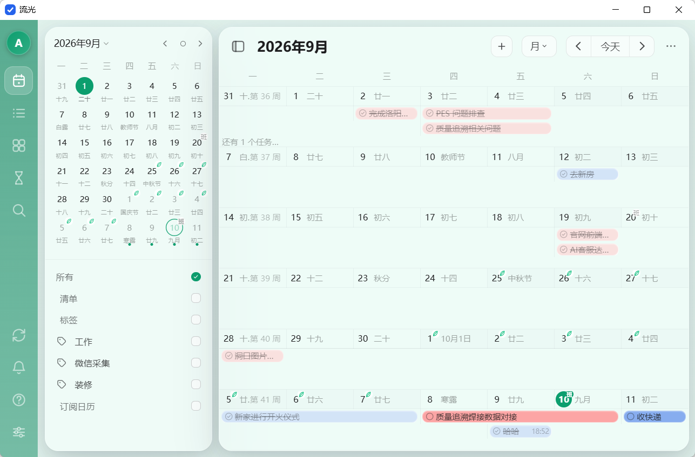
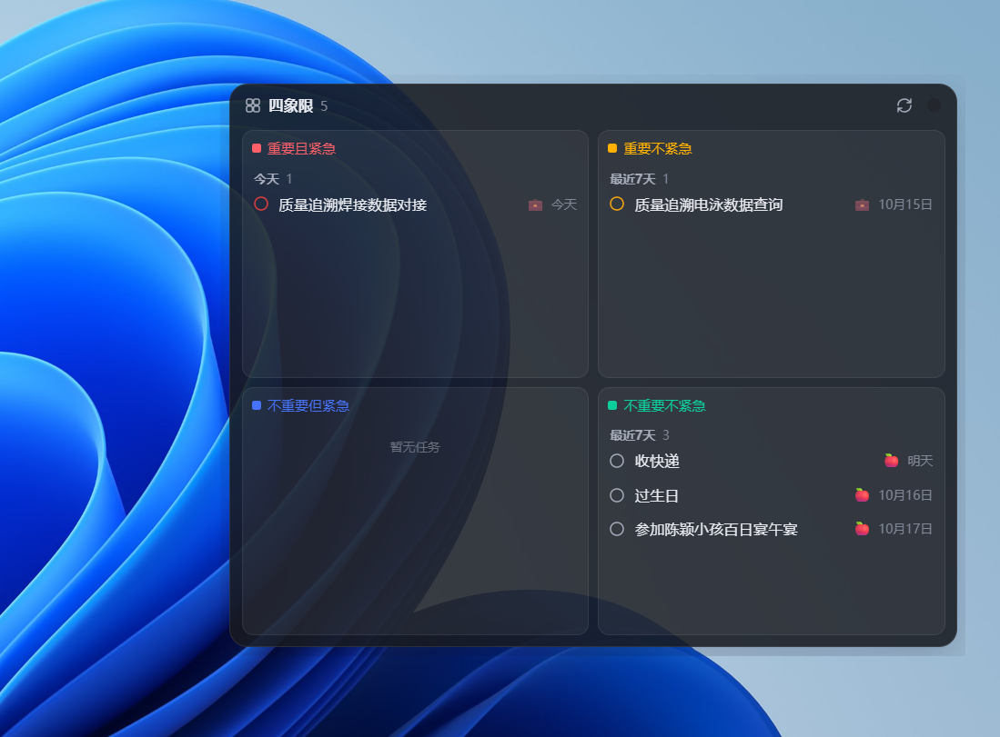

日历 核心
月 / 周双视图，迷你月历带农历、节气与法定节假日图标；任务色块拖拽改期、双击空白格快速添加、格子容量自适应浮层；周视图 24 小时时间网格，当前时间红线。
自托管的日程管理应用：以月 / 周日历为核心，任务清单、四象限、倒数日一站式管理。 液态玻璃质感 UI，一个命令启动服务，浏览器打开即用；Windows 桌面版打包为单个 liug.exe，托盘常驻 + 桌面小组件。
v1.0 · 单文件免安装 · 双击即用

浏览器与桌面双形态，功能设计参考滴答清单
月 / 周双视图，迷你月历带农历、节气与法定节假日图标；任务色块拖拽改期、双击空白格快速添加、格子容量自适应浮层；周视图 24 小时时间网格，当前时间红线。
清单 / 标签双维筛选，过期任务红字提醒；任务详情支持日期时间、重复规则、优先级、Markdown 备注与子任务；还能一键导入外部清单应用的 CSV 备份。
艾森豪威尔矩阵（重要 × 紧急）梳理优先级，任务可跨象限拖拽，自动改写优先级与截止日期；桌面版还能把它常驻为桌面小组件。
纪念日、倒数日、生日与节日卡片墙，支持农历与每年重复，预置 8 个传统节日，重要日子一眼可见。
Ctrl + K 唤起全局搜索，标题、备注、标签一网打尽，任务再多也能秒速定位。
8 款预设主题色 + 自定义取色器，即时生效并持久化；多用户登录（scrypt 密码哈希 + HMAC 签名会话），每人数据独立库隔离。
单进程集成系统托盘、主界面窗口（WebView2）、桌面小组件与内嵌服务，PyInstaller 打包为单文件 exe，双击即用。

前后端分离，业务核心双端共享